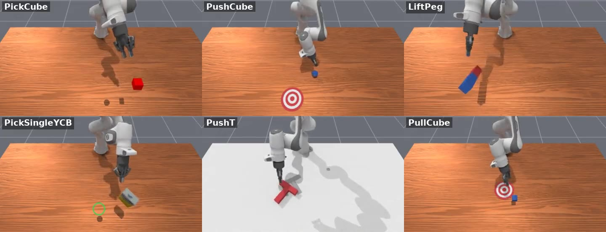

Motivation
Space robots have almost no data
Real manipulation data from orbit is scarce and expensive to collect; recent surveys name data scarcity and microgravity dynamics as open problems for learning-based space robots. Simulation is the only place to gather this experience at scale.
Earth VLAs assume gravity
A VLA pretrained on Earth data has learned that released objects settle and nudged objects stop. In microgravity a light touch sends an object drifting across the module. Whether these habits help or hurt in orbit has not been measured.
No benchmark for it yet
Space simulators exist for reinforcement learning, free-flyer control and cargo transport, but to my knowledge none offers language-conditioned manipulation of free-floating objects inside a station, with demonstrations to train VLAs on.
The station is also a good proving ground for robot learning in general: it is a fixed, well-documented interior (CAD models exist, as do image sequences with known camera poses recorded by NASA’s Astrobee robots), its everyday tasks are concrete (moving cargo bags, stowing tools, catching items that drift away), and its physics are simpler to simulate exactly than most environments on Earth.
Current progress
The ISS environment itself is just starting. What already exists is the groundwork from my zero-gravity manipulation project, which trains robots with gravity switched off in simulation; there, zero gravity is a training aid for tasks on Earth, while here it is the place the robot will actually work.
- done
Microgravity physics in a GPU simulator. Per-environment gravity control in ManiSkill3: thousands of parallel environments, each of which can have gravity off, on, or switch on at contact or grasp. Objects float without damping and keep any momentum the robot gives them.
- done
Containment volumes. Thin, camera-invisible walls that stop a floating object from drifting out of reach but let the robot arm pass through — the simulated equivalent of a station rack bay.
- done
Zero-gravity expert policies on eight tasks (reaching, pushing, pulling, picking, rolling, peg lifting, YCB objects), trained with reinforcement learning, 3 seeds each. On Earth-gravity test tasks they reach objects at heights where gravity-trained experts almost never do.
- in progress
Demonstration → VLA pipeline. Expert demonstrations collected and released as datasets; distillation into a VLA (π0.5) is underway in the zero-gravity project and carries over unchanged.
- done
Literature review and gap analysis (October 2026), summarized under Related work.
- in progress
ISS scene prototype. Loading an ISS module model into the simulator, with an arm mounted on a rack wall and the first floating-object tasks.

Future directions
The approach
Real ISS appearance
Station geometry from CAD models first, then 3D reconstruction (Gaussian splats) from posed ISS images.
Source: NASA models, Astrobee ISS imagesExact microgravity physics
From the simulator, not learned from video: free-floating objects, momentum transfer, contact.
Source: our GPU force mechanismTasks from real operations
Catch a drifting item, stop a tumbling one, stow into a rack slot, move a cargo bag, hand over a tool.
Source: ISS operations footageExperts → data → VLAs
Reinforcement-learning experts generate language-labeled demonstrations; VLAs are trained and evaluated on them.
Source: zero-gravity project pipelineSplitting it this way keeps each part on solid ground: the physics of microgravity are known exactly, so they come from the simulator, while ISS imagery provides what simulators are worst at — realistic appearance and realistic tasks.
Research questions
- Do Earth-pretrained VLAs carry a gravity bias? Evaluate them zero-shot in the ISS scene and catalog how they fail: releasing objects that then drift, pushing too hard, never stopping a moving object.
- What is the best starting point for space? Compare adaptation from Earth-gravity, gravity-randomized and zero-gravity experts and VLAs, with few microgravity demonstrations.
- How much does visual realism matter? Compare CAD-rendered and reconstructed ISS visuals for policies that must work from images.
- Can a world model of the station replace the hand-built scene? Longer term: learn an action-conditioned world model of the ISS interior from real footage, so VLAs can practice in it.
Roadmap
1 · ISS scene prototype — now
A station module in the simulator, an arm mounted on a rack wall, and two or three floating-object tasks.
2 · Gravity-bias probe
Zero-shot evaluation of existing VLAs in the ISS scene, with a failure-mode taxonomy.
3 · Experts, demonstrations and VLA training
Expert policies for each task, language-labeled demonstrations, VLA fine-tuning, and the adaptation study.
4 · Realism and release
Reconstructed ISS visuals, a public benchmark (tasks × lighting × objects) and dataset.
5 · Beyond a fixed arm
A free-flying robot with an arm, where every push also moves the robot, and real-world checks on planar air-bearing analogues of microgravity.